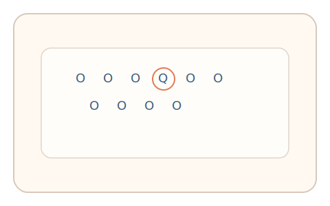
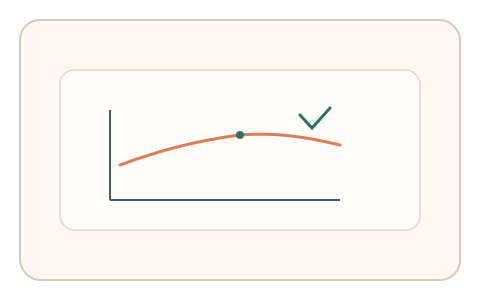

#49
视觉思考范式：时域/适应/残影
已扩展
搜索不对称时间
对比“Q 中找 O”和“O 中找 Q”的完成时间差异，利用视觉搜索不对称性验证真实性。
概念原文
设计两组“Q 中找 O”和“O 中找 Q”的任务，记录完成时间差异与错误率结构。
以人类视觉搜索不对称性作为验证特征。
研究背景
视觉搜索存在不对称性：某些特征在背景中更易被发现。通过比较两种对称任务的完成时间与错误率结构，可形成稳定的行为特征。
核心机制
- 提供两组对称搜索任务（Q 中找 O / O 中找 Q）。
- 用户完成搜索并点击目标。
- 记录完成时间与错误类型。
- 分析时间差异与错误结构。
用户流程
- 步骤 1：用户完成第一组搜索任务。
- 步骤 2：用户完成第二组对称任务。
- 步骤 3：系统比较时间差异并判定。
判定信号
两组任务完成时间差
人类搜索不对称性导致稳定时间差。
错误率结构与回访次数
真实搜索会出现可预测的错误分布。
判定逻辑
比较两组任务的时间差与错误分布，要求符合典型不对称模式；时间差过小或反向判异常。
对抗面
- 脚本直接识别目标并统一时间响应
- 重放真实用户的搜索轨迹
防御与缓解
- 随机化排列密度与目标位置
- 引入干扰符号与轻微旋转
- 叠加鼠标轨迹与微时序信号进行多信号判定
可达性与风险
提供更低密度或替代任务模式，避免对视觉负担过高用户造成不适。
- 高密度搜索导致疲劳
- 设备尺寸差异影响完成时间
可视化状态

状态 1：任务 A
Q 中寻找 O 的搜索任务。

状态 2：任务 B
O 中寻找 Q 的对称任务。

状态 3：时间差判定
比较两组任务时间差与错误结构。
参考资料
Visual search
说明视觉搜索与特征不对称性。
Feature integration theory
说明特征整合与搜索效率差异。